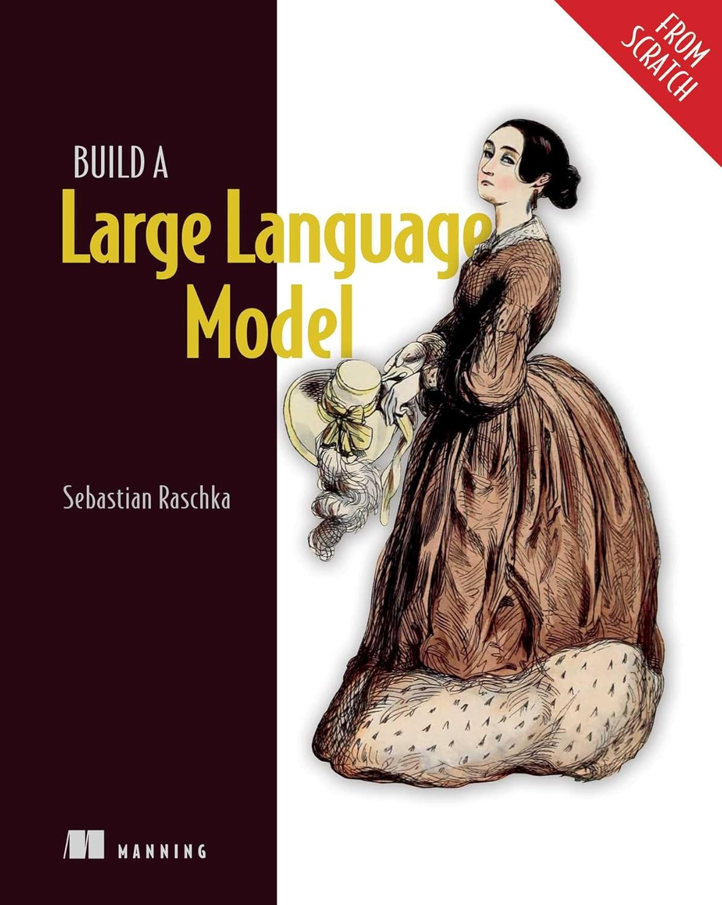

Learn LLMs
Lessons
Building Blocks of GPT-2 LLM
Introduction
Objective
Introduction to Large Language Models (LLMs)
GPT - Generative Pretrained Transformer model
Introduction to tokenization
Introduction to embedding
Reference
Book “Build a Large Language Model (From Scratch)”, Sebastian Raschka
Who is the lesson for?
About the course
See also
Credits
Architecting Autonomous Systems
Learn LLMs
Building Blocks of GPT-2 LLM
Reference
Edit on GitHub
Reference
Book “Build a Large Language Model (From Scratch)”, Sebastian Raschka
